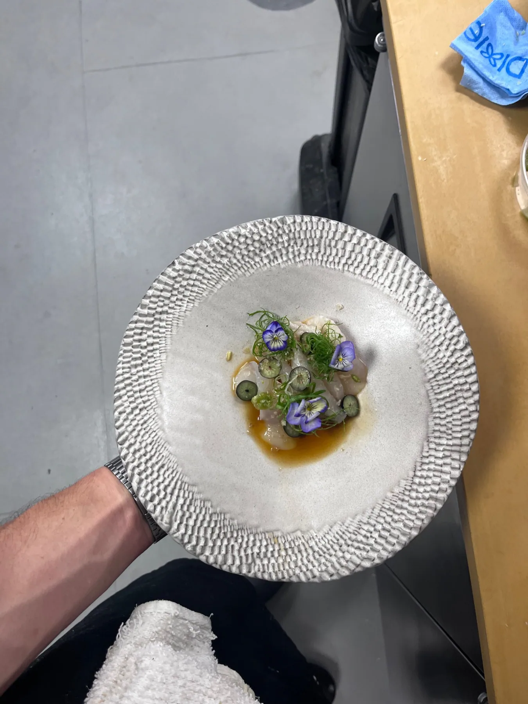
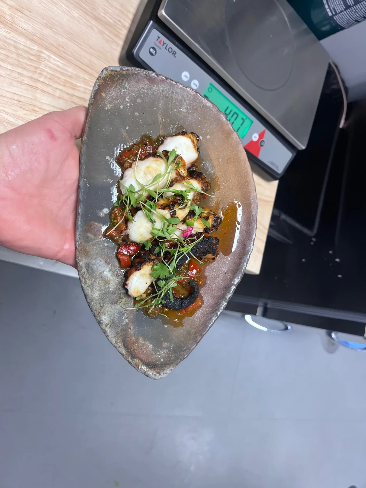
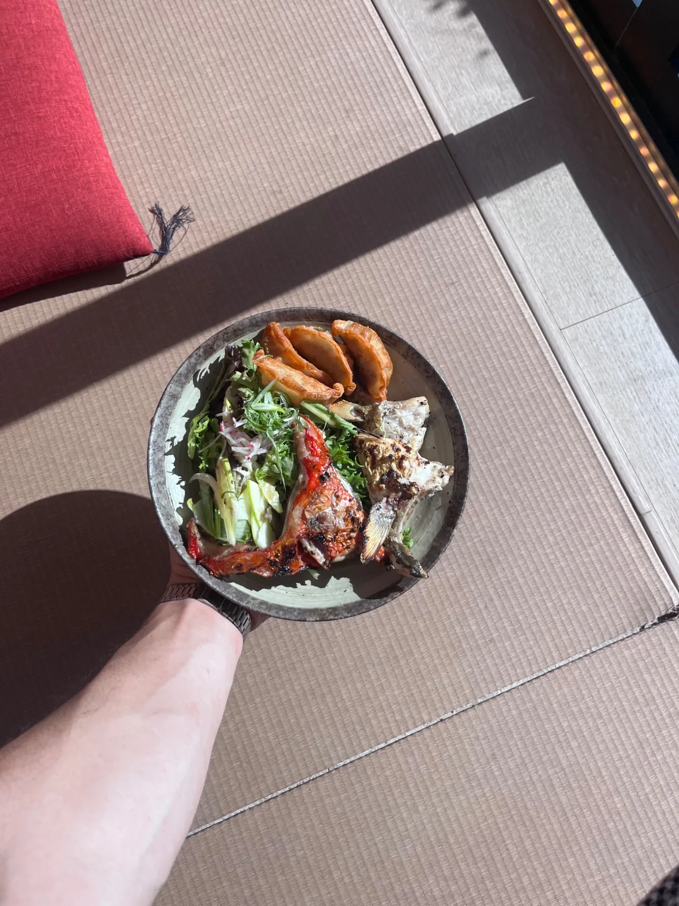

ISSUE 001 / THE PHOTO INDEXARCHIVED FRAGMENTS / EST. 2026
ROHBEIR / EVERYDAY EVIDENCE
the in-
between.
Before the plate. After the service. During the experiment. An unpolished record of things made, tasted, shared and tried again.
EXPLORE THE INDEX ↓


PHOTO NOTEBOOK
45 FRAMES
45 FRAMES
01 / THE FULL COLLECTION
Proof of making.
Browse by subject, or open any frame for a closer look. The photos appear here as they were taken, with only sizing and compression for the web.
No photographs in this category.
END OF THE CURRENT ROLL / MORE TO COMEBACK TO HOME ↗